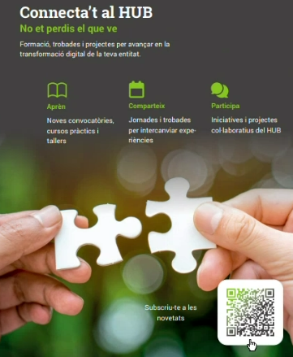

Hub de transformació digital ecityclic
Territori, tecnologia, persones
Índex
Continguts de la presentació
- 01
Noves integracions amb serveis AOC
PSCP i Via Oberta
- 02
El Hub de transformació digital
L’estratègia d’esPublico amb la capacitació dels usuaris
Noves integracions
amb serveis AOC
Primera part · PSCP i Via Oberta
El Hub de transformació digital
Segona part · L’estratègia d’esPublico amb la capacitació dels usuaris
Estratègia
Estratègia d’esPublico: pilars
5Estratègia
La proximitat es practica en persona
de la nostra plantilla treballa de forma permanent i presencial a les entitats clients
Estar a prop de l’usuari forma part de la nostra manera de treballar
Des d’aquesta proximitat plantegem una formació connectada amb la seva realitat.
Font: dada interna d’esPublico facilitada per a aquesta presentació
6Estratègia
Compartim coneixement per tal de capacitar als usuaris
La nostra aposta és que els usuaris puguin aplicar el coneixement a la seva feina amb autonomia
Formació general per a tots els usuaris
- 70.000
Alumnes a la plataforma de formació online
- 41.796
Assistents a 50 webinars programats
Formació en projectes d’implantació
- 4.991
Sessions online en projectes d’implantació
- 14.753
Sessions presencials en projectes d’implantació
Diferents modalitats per acompanyar l’aprenentatge de cada usuari
Font: dades internes d’esPublico facilitades per aquesta presentació
7Estratègia
Una forma eficaç d’aprendre
La nostra aposta per la capacitació i la nostra experiència presencial orienten el disseny del HUB
Fora de l’entitat
Un espai dedicat a la formació
Temps per a concentrar-se
Apartat de les interrupcions del treball diari
Pràctica acompanyada
Es treballa sobre casos amb suport d’especialistes
Aprenentatge entre companys
Experiències compartides amb usuaris d’altres entitats
Creiem en una formació amb temps per practicar i aprendre junts
8En aquest context, què és el HUB?
Territori, tecnologia, persones
El HUB
Context i premisses de partida
- El Grup esPublico és una companyia referent en desenvolupament de software per a l’Administració Pública
- ecityclic manté la seva identitat per a desenvolupar l’estratègia d’esPublico al territori català
- Ampliació de les oficines d’esPublico i dotació d’espais versàtils i adaptables per a nous usos
- Molts usuaris amb perfils heterogenis i en diferents estadis de maduresa digital
- 739
administracions públiques clients de tecnologies d’esPublico
- 20.000
usuaris de Gestiona a Catalunya
El HUB
La formació presencial connecta el territori
El HUB busca reunir a professionals de diferents entitats catalanes per aprendre junts i compartir la seva experiència
Trobada entre entitats
Conèixer companys que afronten reptes similars
Coneixement compartit
Posar en comú experiències i formes de treballar
Relacions de continuïtat
Afavorir la col·laboració més enllà de la sessió formativa
Una aposta per la capacitació que contribueix al propòsit de vertebrar el territori
11El HUB
Valors
Proximitat
Acompanyament eficaç, cara a cara amb l’usuari i la seva realitat diària
Utilitat
Capacitació pràctica, adaptada a cada perfil i nivell de maduresa digital (valor pràctic)
Col·laboració
Espais compartits on els usuaris aprenen entre ells i amb nosaltres (Comunitat)
Referència
Ser el punt de referència digital permanent per a l’administració catalana (generar confiança)
El HUB
Catàleg d’accions
Formació
Iniciatives formatives 100 % pràctiques guiades per especialistes
Laboratori
Metodologia i disseny de procediments d’àmbit territorial
Esmorzars d’experts
Trobades amb experts del grup esPublico per a perfils tècnics
Altres accions
Formacions, col·loquis i debats, projectes i iniciatives conjuntes
El HUB
HUB al 2026
Kickoff juliol 2026
Accions: reunions a les instal·lacions per definir el model i validar les propostes d’ús dels espais.
2n semestre 2026
Accions: Taller de tramitació reglada 360º i sessions de formació en integració PSCP, Via Oberta i novetats en el mòdul d’OOCC.
- Taller de tramitació reglada
- Taller Drag
- Taller PSCP + Via Oberta
- Taller de transparència
El HUB
HUB 2027
2027 ....
Accions: laboratoris de disseny de procediments i esmorzars d’experts del grup esPublico.
Accions: formacions a càrrec d’empreses col·laboradores, impuls d’iniciatives provinents d’usuaris del hub, etc.

El HUB
Comunicació
Aprèn
Noves convocatòries, cursos pràctics i tallers
Comparteix
Jornades i trobades per intercanviar experiències
Participa
Iniciatives i projectes col·laboratius del HUB
Gràcies!
Hub de transformació digital d’ecityclic
Territori, tecnologia, persones